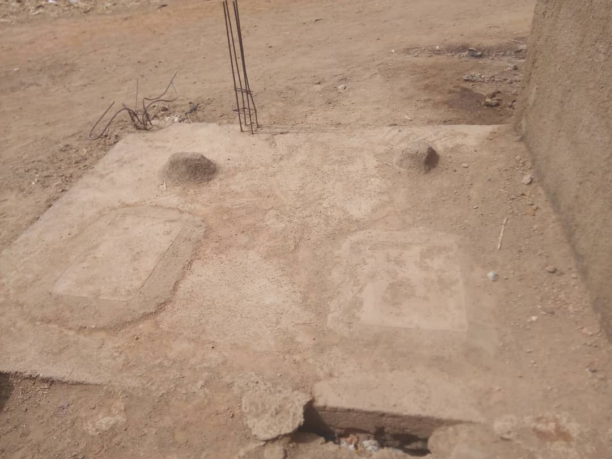
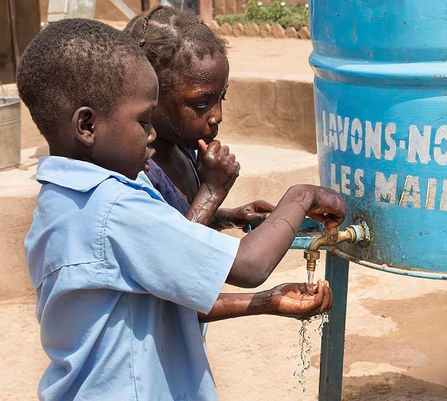

In 2018 with the financial contribution of Xeless and using the Project WET foundation materials we delivered a succesful Hand Wash project in our school in Bamako. This included the refurbishement of the school toilets, the installation of a hand wash station and the sensibilization of the children about the importance of hand washing.
In 2019 we are planning to roll out the Hand Wash project to our other supported school, the School of Winners.
This school has been working for 5 years practically without toilets. As the number of children increased steadily this situation has become a more and more serious problem. This year the founder of the school, M. Guindo set about improving the sanitation of the school and started to build the toilets.
We propose to help him financially to finish the construction of four toilet cubicles made (for the time being only in concrete) and create a designated place for a water container with a tap for the children to be able to wash their hands after the toilet. The container will be filled up every morning from a nearby well.
Current status of the two toilets that are waiting for an enclosure:
The planned hand wash area would be an istalation like this:
As soon as the construction of the facilities is finished we propose to offer a Hand Wash campaign for the children in the school. The campaign would involve our volunteer(s) to go to Mali and give an interractive talk in the form of a school lesson on why, how and when it is important to wash hands. We would like to build on last year’s lesson plans which involved interactive games, a song and simplified scientific explanations. We would talk about the importance of hand wash and hygene during the lessons.